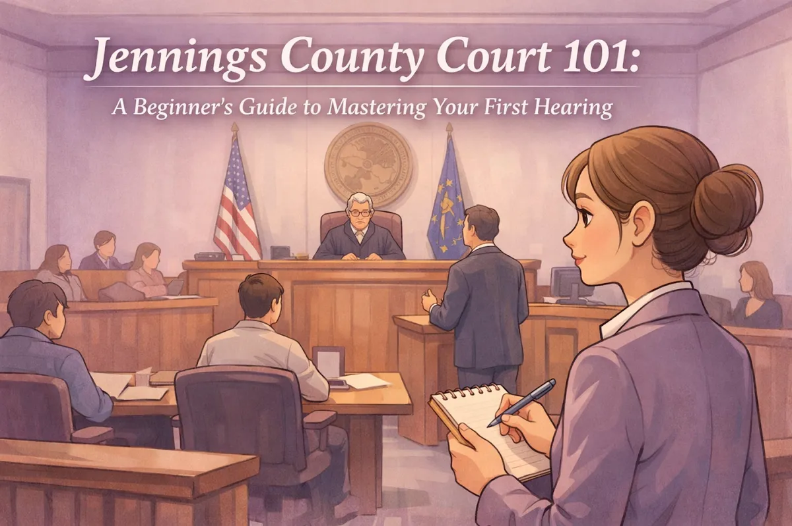
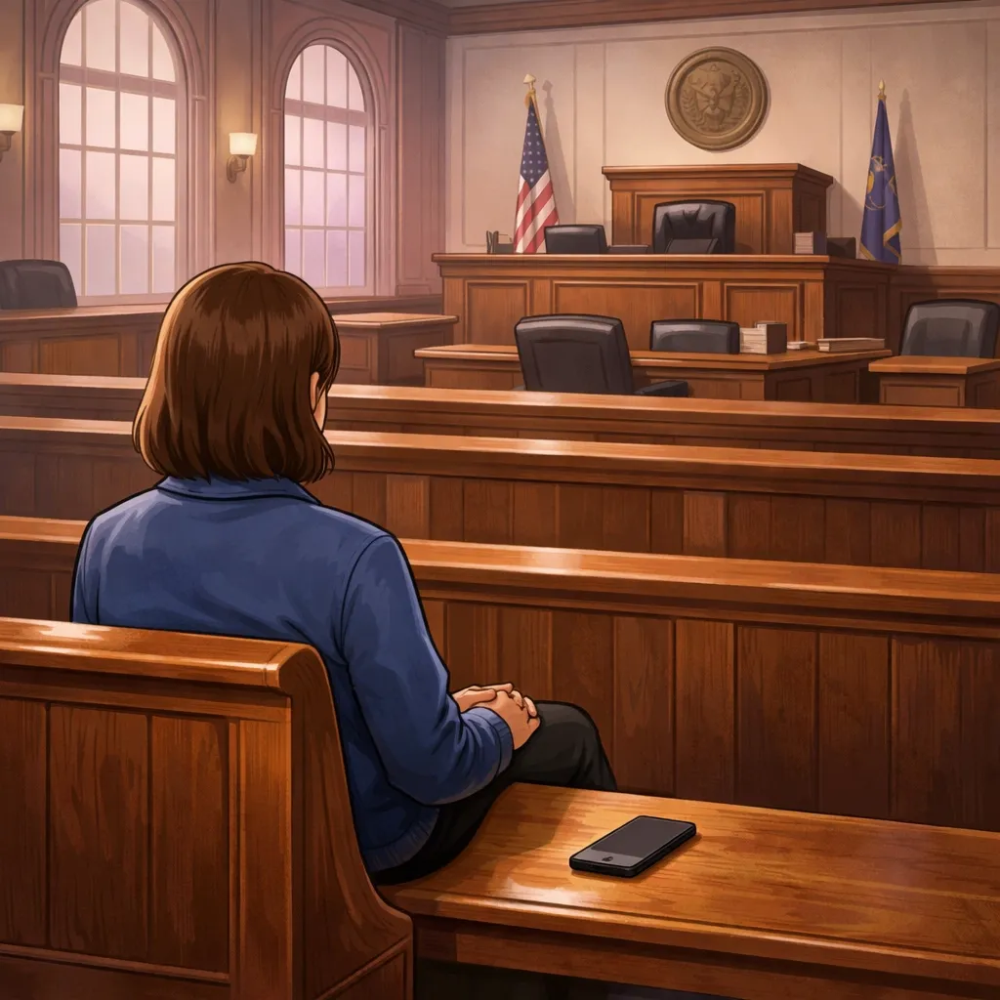

Jennings County Court 101: A Beginner's Guide to Mastering Your First Hearing

If you've just received a notice to appear in court, your first reaction was probably a heavy sinking feeling in your stomach. Trust me, you aren't alone. Whether you're coming in from Scipio, driving down from North Vernon, or making the trip up from Commiskey, the idea of standing in front of a judge can feel intimidating.
I'm Chris Doran, and as a lawyer in Vernon Indiana, I've spent a lot of time in our local halls of justice. I've seen people from all walks of life walk through those doors: some prepared, and some looking like they'd rather be anywhere else on earth. My goal is to make sure you feel like the "prepared" version.
Think of this as a neighborly chat over coffee. We're going to walk through exactly what to expect when you head to the Jennings County Courthouse so you can walk in with your head held high.
Getting There: The Journey to Vernon
First things first: our courthouse isn't actually in North Vernon. It's located in the historic town of Vernon at 24 North Pike Street. If you're used to the hustle and bustle of North Vernon, Vernon has a much slower, historic pace.
Parking and Timing. Vernon is beautiful, but its streets weren't exactly designed for modern traffic. Parking can be a bit of a puzzle on busy court days. My best advice? Arrive at least 20 to 30 minutes before your scheduled hearing time. This gives you plenty of cushion to find a spot, walk to the building, and clear security without breaking a sweat. If you're coming from Hayden or Scipio, leave a few minutes earlier than you think you need to. There's nothing that starts a hearing off on the wrong foot like sliding into the courtroom late and out of breath. Plus, the judge may issue a warrant.
The Building Layout. When you walk into the Jennings County Courthouse, you'll need to know where you're going. The building houses two main courts:
Jennings Superior Court. Located on the first floor. This court usually handles things like misdemeanors, small claims, divorces, and traffic infractions.
Jennings Circuit Court. Located on the second floor. This court typically handles more complex civil cases, all juvenile matters, and estates.
Knowing which floor you need to be on saves you from wandering the halls looking lost. If you aren't sure, don't be afraid to ask the security staff: they are local folks and generally very helpful.
Dressing the Part (Without Breaking the Bank)
You don't need a three-piece suit or a designer gown to impress a judge in Jennings County. This is a hardworking community, and the court respects that. However, showing respect for the court through your appearance goes a long way.
Think "Sunday Best" or "Business Casual." A clean polo or button-down shirt and a pair of slacks or neat jeans (without holes!) is perfectly fine for most hearings. The goal is to show the judge that you take the situation seriously.
What to avoid: Hats (take them off before you enter the courtroom). Shirts with offensive language or political slogans. Flip-flops or overly casual tank tops. Sunglasses on top of your head.
Remember, the judge is a person too. When they see someone who has taken the time to look presentable, it sends a message that you respect the legal process and their time.

Courtroom Etiquette: The "Do's and Don'ts"
Inside the courtroom, there's a certain rhythm to how things work. It can feel a bit formal, but it's all designed to keep things moving fairly.
Addressing the Judge. Whenever you speak to the judge, always start or end with "Your Honor." It's the standard sign of respect in any courtroom. Even if you disagree with what's being said, staying polite and calm is your best strategy. Let the judge finish speaking before you start; interrupting a judge is a quick way to lose their favor.
Silence is Golden. While you're waiting for your name to be called, you'll likely be sitting in the "gallery" (the benches in the back) or in the hallway. It's important to stay quiet. Judges are often balancing multiple cases at once, and a noisy gallery is a major distraction. If you have a question, ask one of the court staff to let them know you are here.
The Phone Rule. This is a big one. Turn your cell phone off or leave it in the car. If your phone goes off in the middle of a hearing, it's not just embarrassing: the judge might actually confiscate it. If you have evidence on your phone (like photos or text messages), make sure you've printed them out beforehand. You can't exactly hand your phone to the judge to look at while you're testifying and the judge can't put it into evidence unless you want to give them your phone.
Preparing Your Paperwork
If you're heading into a hearing, you should have your "ducks in a row." This means having all your documents organized and ready to go.
Whether you are preparing for an Indiana custody hearing or a small claims case, you should bring:
Three copies of everything. One for the judge, one for the other side, and one for yourself to keep at the table.
A notepad and pen. You'll want to take notes on what the other side says so you can respond when it's your turn.
A timeline. If your case involves a long history of events, write down a simple timeline for yourself so you don't get flustered and forget dates.
If your case involves more complex issues, like the new 2025 laws around fentanyl, having the right documentation is even more critical. The law is always changing, and showing up with organized facts helps your case immensely.
Why a Local Lawyer Makes the Difference
You might be wondering, "Can I just do this myself?" While you technically can represent yourself, having a lawyer in Jennings County by your side is like having a local guide in the woods.
I've lived and worked here for years. I know how our local courts operate, I know the staff, and I understand the specific preferences of our local judges. When you hire an attorney that serves North Vernon Indiana, you aren't just paying for legal knowledge: you're paying for someone who knows the "lay of the land."
As a Jennings County attorney, I wear many hats. Sometimes I'm a strategist, sometimes I'm a shield, but I'm always someone who listens to what you have to say and gives you real options. I don't use "big city" legal jargon to confuse you. I speak plainly because I want you to understand exactly what is happening with your case.
What Happens When Your Name is Called?
When the bailiff calls your name, you'll walk up to one of the tables in front of the judge. If you have an attorney, you'll sit with them. If not, you'll take a seat and wait for the judge to explain the purpose of the hearing.
Don't be surprised if the hearing is shorter than you expected. Many first hearings are "initial hearings" or "status conferences," where the judge is just making sure everyone knows what the charges or claims are and setting a date for a future trial.
If you are asked to speak: Stand up. Speak clearly and into the microphone, if there is one. Be honest. The courtroom is a place for facts, not exaggerations.
If you're facing a criminal matter, such as a traffic stop where you might be wondering if field sobriety tests are required, your lawyer will do most of the talking for you. This is one of the biggest benefits of having representation: it takes the pressure off you to say the "perfect" thing in a high-stress moment.
After the Hearing
Once the judge says you are dismissed, you can leave the courtroom. But the work doesn't stop there. Make sure you understand the next steps. Did the judge give you a deadline to file paperwork? Did they set another court date?
Before you head back to North Vernon for a bite to eat or head home to Commiskey, take a second to write down what happened while it's fresh in your mind. If you have a lawyer, this is the time to have a quick debrief in the hallway to make sure you're both on the same page for the next step.
We're Here to Help Our Neighbors
At Chris Doran Law LLC, I pride myself on being a small-town lawyer who handles complex problems. Whether you're dealing with a family dispute, a criminal charge, or a civil matter, you don't have to walk into that courthouse alone. I believe in transparency, which is why I'm always upfront about things like travel fees and legal costs: honesty is the only way to do business in a community like ours.
If you're feeling overwhelmed about an upcoming hearing, let's talk. I'm here to listen, to give you options, and to help you navigate the Jennings County court system with confidence.
You can learn more about my background and how I serve our community on my About Me page, or feel free to browse more tips on my blog.
Ready to get some peace of mind? Contact us today, and let's get to work on your case. Your first hearing doesn't have to be a nightmare: not when you've got a neighbor in your corner.